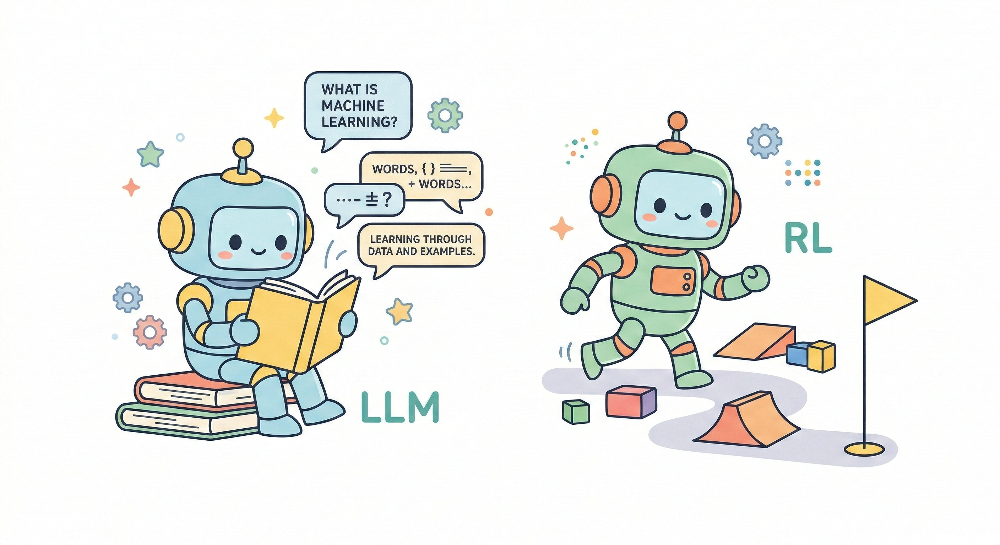

← 返回 Rein Room

為何重要
LLM 當道，學生還需要學 RL 嗎？
強化學習的不可取代性——當 AI 不是回答問題，而是做決定
ChatGPT 這麼強，RL 還有存在價值嗎？
這是一個合理的問題。2023 年之後，大型語言模型（LLM）的能力讓很多人重新評估：
我們還需要學什麼？ChatGPT 能寫程式、能解釋概念、能回答幾乎所有問題，
那還花時間學強化學習，值得嗎？
答案是肯定的——但理由不是「RL 比 LLM 更厲害」，
而是它們根本在解決兩個完全不同的問題。
兩個不同的問題
LLM 的強項是「知識的提取與重組」：給一段輸入，輸出一段回應。
它非常擅長回答問題、解釋概念、生成文字。
RL 解決的是完全不同的問題：一個 Agent 如何在與環境的持續互動中，學會完成一個目標。
輸入不只是文字，輸出不只是回答，而是一連串的「決策」，每個決策都會改變環境狀態，
環境再回饋獎勵，Agent 靠這個訊號學習。
RL 的三個不可取代場景
1
連續決策問題
自動駕駛、機器人控制、電玩遊戲 AI——這些任務要求 Agent 在時間序列中持續做出決策，
每個動作都影響下一個狀態。LLM 不擅長這種「時序依賴的控制問題」，而這正是 RL 的主場。
2
需要試錯的學習
很多真實任務沒有「正確答案」可以預先標注。AlphaGo 不是靠人類棋譜學會下贏人類的，
而是靠自我對局、靠輸贏訊號學習。RL 能在沒有教師標注的情況下，從零習得策略。
3
與環境互動的任務
工廠排程優化、資源分配、個人化推薦系統——Agent 不是在「讀資料」，而是在「做動作」，
動作的結果會改變環境，環境再給新的訊號。這個閉環本質是 RL 的核心，LLM 無法替代。
LLM + RL：不是競爭，是合作
事實上，最前沿的 AI 系統正在把兩者結合：
| 應用 | 說明 |
|---|
| RLHF（人類反饋強化學習） |
ChatGPT 本身就是用 RL 訓練的。人類評分者的偏好被轉化成獎勵訊號，用 RL 讓 GPT 的輸出更符合人類期望。沒有 RL，ChatGPT 不會這麼好用。 |
| LLM 作規劃器，RL 作執行器 |
新一代 AI Agent 架構：LLM 負責理解任務、分解步驟（高層規劃），RL 負責在環境中精確執行每一步動作（低層控制）。兩者各司其職。 |
| AI Agent 系統 |
能自主瀏覽網頁、操作軟體、完成多步驟任務的 Agent，核心機制正是「狀態觀察 → 決策 → 執行 → 獲得反饋」——這是標準 RL 框架。 |
關鍵點：
你用的 ChatGPT，背後就有 RL。理解 RL，不只是學一個工具，
而是理解你每天使用的 AI 是怎麼被訓練出來的。
為什麼「現在」學 RL 特別有價值？
理解
理解 AI 如何學習，不只是如何使用
學會「提示 ChatGPT」是使用技能。理解「AI 如何通過獎勵訊號學習行為」是設計思維。
在 AI 工具越來越強大的時代，能理解底層機制的人，擁有截然不同的視角。
能力
從「提示 AI」到「設計 AI」的能力跳躍
RL 讓你思考的問題是：目標是什麼？獎勵怎麼定義？狀態要怎麼表示？
這些問題沒有標準答案，需要你做設計決策。這種能力，是 Prompt Engineering 之上的層次。
素養
RL 思維是 AI 時代的底層素養
Reward 設計、狀態表示、探索與利用的取捨——這些概念不只適用於 AI，
也是決策科學、管理學、產品設計的底層邏輯。學 RL，是在建立一套思考框架。
一個值得思考的問題：
如果學生只學會「怎麼用 AI」，而不理解「AI 怎麼學習」，
當下一波 AI 工具出現時，他們還有競爭力嗎？
讓抽象變得可觀察
RL 的概念——獎勵訊號、策略更新、探索與利用——聽起來很抽象，
但它們描述的其實是非常直觀的事：一個人（或機器）如何在嘗試與失敗中學會一件事。
Rein Room 要做的，就是把這個過程變得可觀察、可操作。
你不需要讀懂 Bellman 方程，就能看到 Q-Table 如何在訓練中逐漸從隨機變為有意義；
你不需要理解反向傳播，就能感受到 DQN 在什麼時候比 Q-Table 更有優勢。
在 LLM 已經能回答所有問題的時代，「親眼觀察 AI 如何學習」這件事，
反而變得更稀缺、更有價值。
下一步：
如果你好奇 RR 怎麼用，可以從
快速上手指南 開始——
5 分鐘內讓你的第一個 Agent 跑起來。